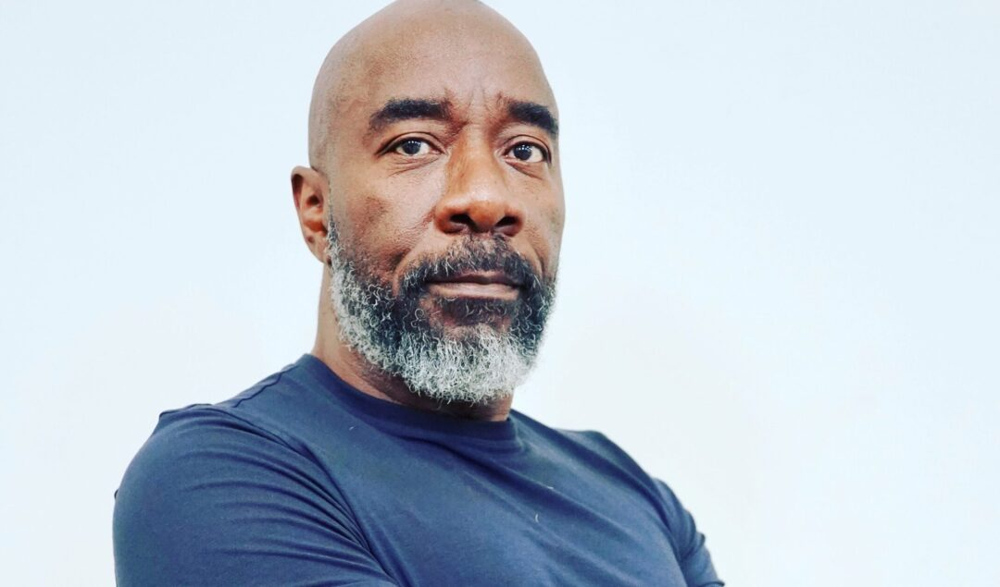

Our Tech Heroes
Moses West

Our first tech hero is Moses West, founder of AWG Contracting and a pioneering engineer behind solar-powered Atmospheric Water Generators (AWGs). West designed this technology to extract moisture from the air and condense it into safe, potable drinking water, providing a renewable, off-grid solution for communities facing water insecurity.
His systems have proven especially critical in disaster-stricken and underserved regions. In Accompong, Jamaica, his solar-powered generator continued producing nearly 400 gallons of clean water daily even after Hurricane Melissa devastated local infrastructure. West has also deployed his technology to support communities affected by water crises, including Flint, Jackson, and Puerto Rico.
Optimized for high-volume, cost-effective production across diverse climates, West's AWGs are engineered to deliver climate-resilient water access wherever traditional infrastructure fails. Through the Moses West Foundation, he works to bring this life-sustaining technology to communities lacking safe drinking water.
Now, West is scaling production in the United States through a $25 million clean, manufacturing initiative aimed at expanding global access to sustainable, atmospheric water technology, transforming air into hope for communities around the world.
Learn More Moses West Foundation United Nations Article Recent NewsKande Sill
Our second tech hero is Kande Sill. After learning about her, it was amazing to learn that at just 16 years old she was awarded the prestigious Arkwright Engineering Scholarship. She earned this recognition because her work is both highly relevant and impactful, especially in supporting underserved communities. What's inspiring is how she proves that age is just a number. Through her project, “Enhancing Medical Delivery,” she explores how drones can be used to securely transport critical medical supplies, demonstrating real-world problem solving.
Learn More